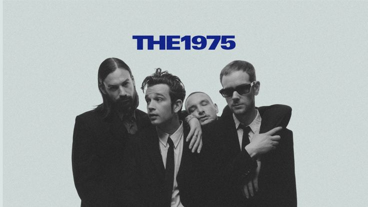

Established 2002
The 1975 adalah band pop rock asal Inggris yang terbentuk di Manchester pada tahun 2002. Band ini terdiri dari empat anggota utama: Matty Healy, Adam Hann, Ross MacDonald, dan George Daniel.
Mereka dikenal dengan gaya musik yang unik, memadukan berbagai genre seperti indie rock, pop, elektronik, dan R&B. Musik mereka sering kali mengangkat tema-tema modern seperti hubungan, kehidupan digital, kesehatan mental, hingga kritik sosial terhadap budaya kontemporer.
Album debut mereka yang berjudul The 1975 (2013) langsung menduduki puncak tangga lagu Inggris. Sejak itu, mereka terus berevolusi melalui diskografi yang kompleks dan berani.
Selain musik, The 1975 memiliki identitas visual yang kuat—sering menggunakan estetika monokrom, neon, dan minimalis. Hal ini menjadikan mereka tidak hanya sekadar band, melainkan sebuah ikon budaya modern bagi generasi digital.
A Brief Inquiry
© 2026 Dirty Hit